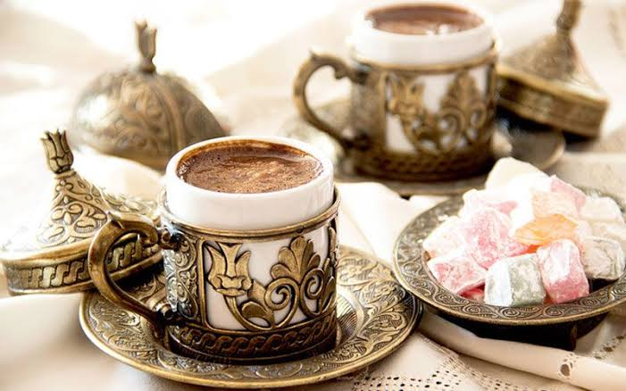
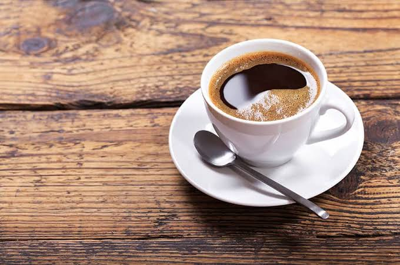
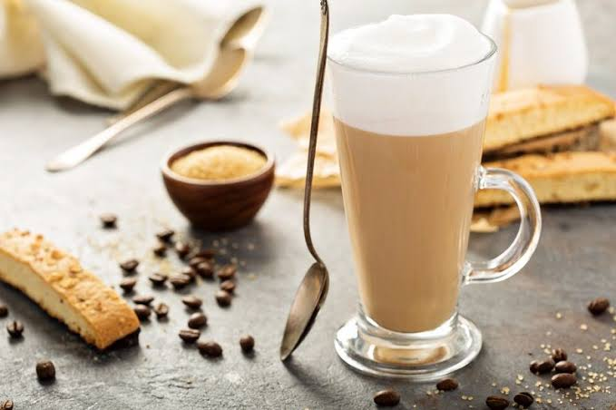
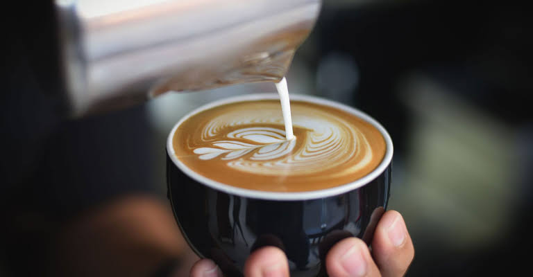

BAZI KAHVE ÇEŞİTLERİ
Türk Kahvesi

Türk kahvesi, Türkler tarafından bulunan kahve hazırlama ve pişirme metodunun adı. Kendine has tadı, köpüğü, kokusu, sunuluş biçimiyle özgün bir kimliği ve geleneği vardır.
Americano

İtalyanlar tarafından geliştirilen bu kahve çeşidi espressoya su eklenmesiyle oluşturulur. Filtre kahveye benzeyen bu lezzetin sertlik derecesini ise Americanoya konan kahve ve su miktarı belirler.
Latte

Espresso bazlı kahveler arasında en popüler olanlardan biri: Latte / Caffé Latte. Gerek yumuşak içimi gerek sanatıyla ayrı bir kültür oluşturan ‘Latte’, İtalyanca’da süt anlamına gelmektedir.
Cappuccino

Adını Fransisken rahiplerinin kıyafetlerinden alan Cappuccino, İngilizce 'de ‘Capuchin monks’ olarak anılan rahiplerin kıyafetlerine benzetilmiş ve bu şekilde anılmaya başlamış, espresso bazlı sütlü kahvedir.
Doppio

Yoğun bir kıvama ve sert bir tada sahip olan doppio, iki fincan espresso olarak servis edilen kahve türüdür. Süt kullanılmadan sade olarak hazırlanan espresso çeşitlerinden biri olan doppioda 60 ile 185 mg arasında kafein bulunur ve yoğun kafein miktarı ile uyandırıcı bir etkiye sahiptir. Uyandırıcı etkisi ile genellikle sabahları içilir.